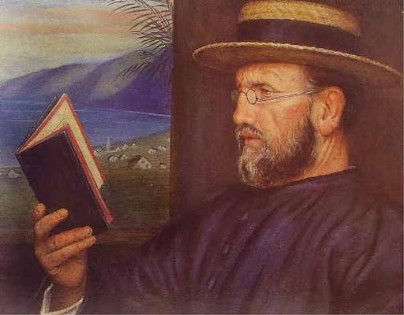

„Hoće li tko za mnom, neka se odreče samoga sebe, neka uzme svoj križ i neka ide za mnom.” (Mt 16,24)

Rođen je 1840. godine u Belgiji. Kao redovnik odlazi u misije na Havaje 1864. godine (umjesto svog oboljelog brata), gdje je ubrzo i zaređen za svećenika. Na vlastitu želju, 1873. godine odlazi na otok Molokai u izoliranu koloniju gubavaca (tada zvanu "pakao Južnoga mora"). Tamo nesebično djeluje kao dušobrižnik, liječnik i graditelj za 800 zaraženih osoba, vraćajući im ljudsko dostojanstvo. Dvoreći bolesnike i sam se zarazio gubom te preminuo 1889. godine. Pokopan je kao "mučenik ljubavi", a tijelo mu je kasnije preneseno u rodnu Belgiju.
Njegova žrtva izazvala je divljenje diljem svijeta (uključujući Mahatmu Gandhija i Majku Tereziju) te potaknula osnivanje brojnih organizacija za borbu protiv gube. Osim što je zaštitnik gubavaca i grada Honolulua, od 1980-ih godina štuje se i kao zaštitnik oboljelih od AIDS-a zbog svog brižnog pristupa onima koje je društvo odbacilo.
Nakon čudesnog ozdravljenja žene oboljele od raka po njegovu zagovoru, papa Ivan Pavao II. proglasio ga je blaženim 1995., a papa Benedikt XVI. svetim 2009. godine. Spomendan mu se u SAD-u i Belgiji slavi 10. svibnja.